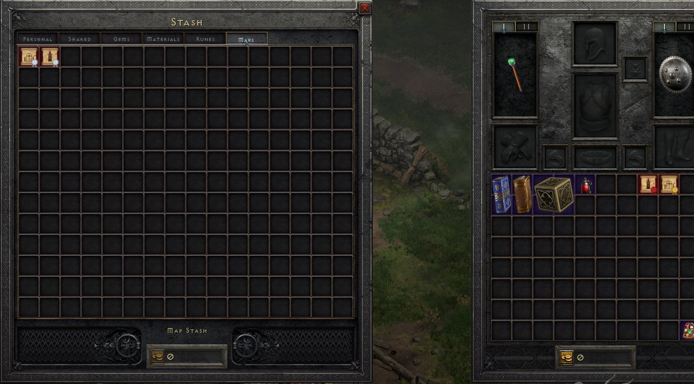
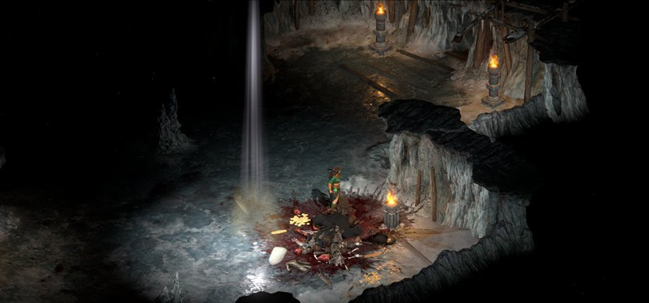
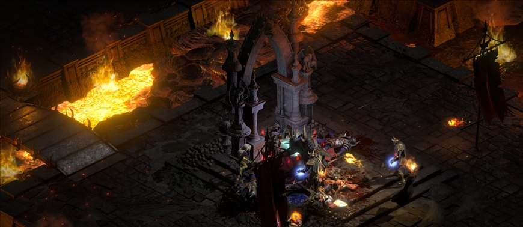

A free mod for Diablo II: Resurrected - Reign of the Warlock with a deep endgame: Maps, the 50-level Hell's Torment, the Rips, level 125, legacy realm items and a league where every drop is witnessed.
Built on D2R Reimagined, with Talonrage's Requiem of Sorrow endgame on top. Every step up is harder - and pays more.



Torment pays more the deeper you go and the Maps the higher the tier: more rune rolls and better odds on elite gear. A monster can drop up to 32 items - D2R's normal cap is 6.
Collect Soul Shards, forge class tokens at the Beacon of Hope and raise a follower of every class through ten tiers.
Roughly one gamble in ten comes out unique - in vanilla it's about one in two thousand.
An experience curve rebuilt for it. 6 stat points per level, 1 skill point per level and 2 on every 5th.
All eight classes, Warlock included. Each class's main mastery scales like the Sorceress's.
Bugged Arkaine's Valor and Stormshield, Ith Crystal Sword, White Ring and Gloves, Wizzy gear, hacked amulets - alongside hundreds of uniques, sets and runewords.
Your own characters, played however you like. Play together over TCP/IP - one person hosts, friends join.
Sign in with Discord in the launcher. League characters live in a vault, every drop is witnessed as it happens, and notable finds are posted live in the Discord. Impossible items are refused; spawned items, dupes and rollbacks are flagged and undone.
No game that runs on your own PC can be made hack-proof. The league is built so that cheating is hard, visible and reversible - and costs the cheater their Discord account. The wiki explains how it stays fair.
Steam or Battle.net, on Windows. The base game alone is not enough - Heyday is built on Reign of the Warlock.
HeydayLauncher.exe - if Windows SmartScreen warns, choose More info then Run anyway.
It finds your game and installs Heyday plus D2RLoader, the community mod loader Heyday runs on (it also adds the Multiplayer menu). The launcher downloads the exact D2RLoader version Heyday is tested with from d2rloader.net, checks it, and keeps everything - itself included - up to date. Your normal D2R characters are never touched.
Single player straight away, or sign in with Discord and press Play League.
If Windows Security flags D2RLoader as "potentially unwanted" - common for mod loaders, which hook into the game - the launcher explains how to allow it; it's your choice. Never use any mod on Battle.net - modded play on Blizzard's servers breaks their terms. Heyday always starts offline.
Yes, completely - Heyday is non-commercial. You only need your own copy of D2R with Reign of the Warlock.
No. Heyday keeps its own saves, and league and single-player characters are kept apart too.
Yes - RuffnecKk's MapSense is allowed everywhere, including the league, and can be switched off in the launcher.
Pick an offline character and press Multiplayer next to Play. Host a Public game (listed in the game browser), an Unlisted one (share its Game ID) or a LAN game; friends join from Browse Games or with the Game ID. Hosting uses TCP port 4000 - D2RLoader sets it up automatically and shows whether others can reach you; some routers need the port forwarded by hand. Everyone needs the same Heyday and D2RLoader version, which the launcher keeps matched. The Discord has a channel for finding games.
The wiki has every unique, set, runeword, cube recipe, skill and boss loot table, plus the in-game guide.
Post it in #bug-reports on the Discord.